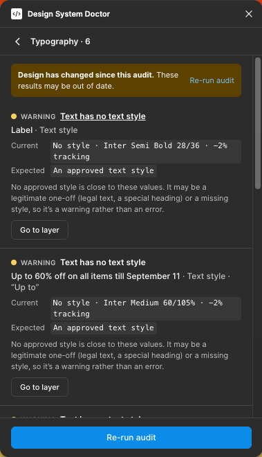
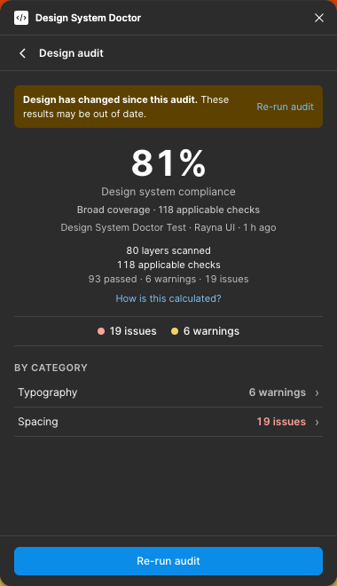
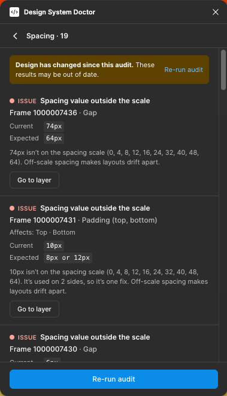
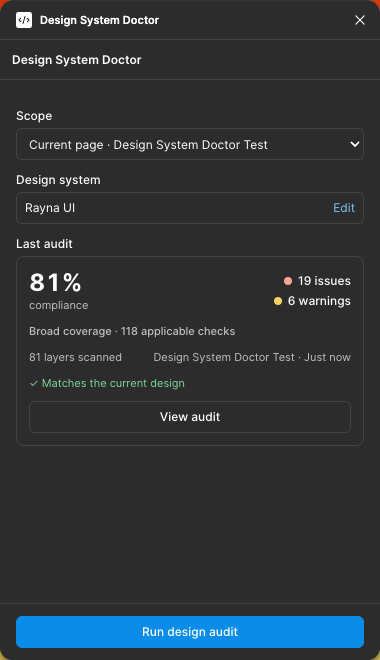
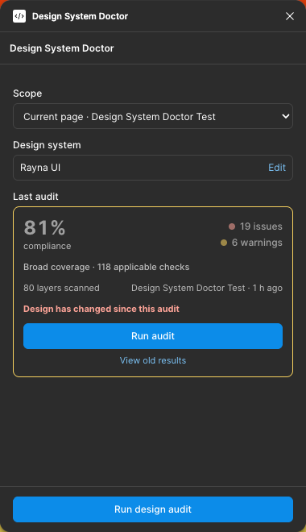

Figma plugin · Design system audit
Your design system.
Audited inside Figma.
Design System Doctor finds inconsistencies across typography, colour, components, spacing and radius, then takes you directly to the layer that needs attention.



Example audit from a validated Rayna UI test run. Real screenshots of the plugin in Figma.
The problem
Small inconsistencies become expensive at scale.
A hard-coded value here, a detached component there. Each one is easy to miss by eye. Across a product they add up to drift, handoff questions and a design system people stop trusting. The plugin reports these as specific fixes.
- Spacing66px→64px
- TypographyLocal style→Approved style
- ComponentsUnapproved component→Library component
Workflow
- 01Configure
Choose the approved variable collections, text styles, colour styles, components and scales. Settings are saved in the file.
- 02Audit
Run on the current page or a selection. The audit is read-only.
- 03Find
Findings are grouped by category and severity, each with its current and expected value.
- 04Navigate
Go to layer selects and zooms to the exact layer, switching pages if needed.
- 05Fix
Fix it in Figma as you normally would. The plugin never edits your design.
- 06Re-audit
Run it again to see what was resolved. Results are marked out of date when the design changes.
The product
Every finding explains itself.

Validation
Validated with Rayna UI.
I tested the plugin by hand in Figma against Rayna UI, an external design system, on a real design built with its elements. This was a manual test, separate from the repository's automated tests.
- Real spacing violations were detected, and I checked each one by hand.
- Go to layer selected the correct layer.
- A 66px gap was fixed to 64px.
- The re-audit reported “1 finding resolved since the last audit.”
- Rayna library components were recognised once library components were approved in the configuration.
The screenshots on this page come from individual manual validation runs in Figma. Results, including the compliance score, depend on each file's configuration and which library sources are available in it. For example, library text styles that can't be read in a file are reported as “Not verifiable” and left out of the score, so the same design can score differently from one run to the next.

What it checks
Five categories. Explicit rules.
- Typography
- Text styles outside the design system. Unstyled text that exactly matches an approved style. Text with no style.
- Colours
- Raw colours equal to an approved variable, and near misses. Variables and colour styles outside the system. Unrelated colours are flagged for review, not scored.
- Components
- Detached instances. Instances of components that aren't approved. Possible duplicate components.
- Spacing
- Auto-layout gaps and padding off the spacing scale, or bound to variables outside the system.
- Corner radius
- Radii outside the approved set. Fully rounded shapes count as the “full” value.
Errors score 0, warnings 0.5 and passes 1. Checks that can't be verified in a file are listed but never counted as passes.
How it was built
Built with AI-assisted development.
The plugin was planned, implemented, tested and documented with Claude Code as an AI coding assistant. I set the requirements, reviewed every phase and tested the plugin in Figma.
The audit engine itself uses no AI. Every finding comes from deterministic rules, so the same design and settings always give the same result, and every result can be explained.
Make your design system easier to follow.
Runs in Figma Desktop. To try it, clone the repository, run npm install and npm run build, then choose Plugins → Development → Import plugin from manifest.